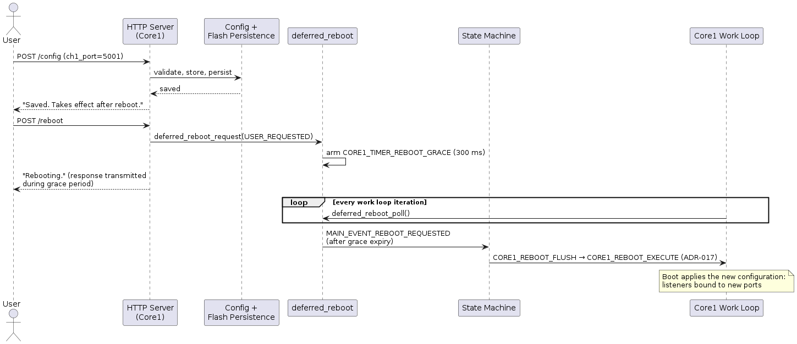

src/update/ ├── deferred_reboot.c include/update/ ├── deferred_reboot.h
ADR-019: Network Configuration Changes Take Effect at Boot
Status
Accepted
Date
2026-08-21
Context
The four UART channels are exposed as TCP servers whose listeners are bound
once during Core1 startup (core1_main.c, boot path). Network configuration
(channel TCP ports, channel enable flags, static IP/netmask/gateway, DHCP
mode) is edited through the web form handled by http_parse_post_data()
(http_forms.c).
Until now, a configuration change was applied at runtime: the form handler
set the config_change_pending flag in shared memory, and the Core1 work
loop reacted by executing core1_apply_configuration_changes(). That
function called network_manager_reconfigure() on the interface, then
multi_tcp_server_deinit_all(), waited 50 ms and re-initialized all enabled
channels with multi_tcp_server_init_channel().
This runtime apply is defective. After changing a channel’s TCP port, the
re-bind following the teardown fails and the device is left without a
working listener on either the old or the new port. Only a reboot restores
connectivity. The failure mode is a listen-PCB lifecycle problem in the
teardown/re-bind cycle (re-bind returns ERR_USE when the previous listen
PCB was not fully released); the failure count only grows with repeated
apply cycles.
A related defect exists in the reboot request path: POST /reboot
(http_server.c) called watchdog_reboot(0, 0, 1) synchronously from the
request handler. With a 1 ms delay the HTTP response races the reset and is
usually lost, so the user receives no acknowledgement.
Relevant existing mechanisms:
-
ADR-017 defines a controlled reboot path:
MAIN_EVENT_REBOOT_REQUESTEDtransitions toMAIN_STATE_REBOOT, Core1 flushes configuration and logs (CORE1_REBOOT_FLUSH) and then executes the reset (CORE1_REBOOT_EXECUTE). -
Chapter 8 ("Configured vs. Runtime Network State") already separates persisted configuration from the state active on the interface.
Port and address changes are rare, administrative operations. A brief, controlled outage during an explicit reboot is acceptable for them.
Decision
All network configuration changes take effect exclusively at boot. There is no runtime configuration apply.
Configuration change semantics
-
The form handler validates a submitted change, stores it in the shared memory configuration, increments the revision counter and persists the configuration to flash — unchanged from before.
-
The form handler no longer sets
config_change_pendingand no longer triggers any runtime apply. The success message states that the change takes effect after a reboot. -
core1_apply_configuration_changes()and its trigger check in the Core1 work loop are removed.network_manager_reconfigure()is called only during the boot sequence. -
The
config_change_pendingfield remains inshared_memory_layout_tas a deprecated field. Removing it would change the persisted flash layout (see TD-010 in Chapter 11).
Deferred reboot
Reboots requested over the network are decoupled from their execution by a
new deferred_reboot module, so the HTTP acknowledgement leaves the device
before the reset:
// deferred_reboot.h
// Grace period between the reboot request and entering the ADR-017
// reboot path. The system stays in MAIN_STATE_OPERATIONAL during the
// grace period, so Core1 keeps servicing lwIP and the HTTP response
// is transmitted.
#define DEFERRED_REBOOT_GRACE_MS 300
void deferred_reboot_init(void);
// Called by the HTTP layer (POST /reboot, firmware update completion).
// Records the reason and arms CORE1_TIMER_REBOOT_GRACE.
// Does not change the main state.
void deferred_reboot_request(reboot_reason_t reason);
bool deferred_reboot_is_pending(void);
// Called from the Core1 work loop. Once the grace timer has expired:
// stores the reboot reason (update_set_reboot_reason) and posts
// MAIN_EVENT_REBOOT_REQUESTED, entering the ADR-017 reboot path.
void deferred_reboot_poll(void);CORE1_TIMER_RESERVED_2 is renamed to CORE1_TIMER_REBOOT_GRACE
(core1_timer.h, ADR-009 timer subsystem).
POST /reboot calls deferred_reboot_request(REBOOT_REASON_USER_REQUESTED)
instead of watchdog_reboot(). The direct watchdog_reboot() call is
removed from http_server.c.
Sequence

Rationale
-
The defect class disappears instead of being fixed: there is no runtime listener teardown/re-bind, so it cannot fail. The only apply path is the boot path, which is exercised on every start.
-
Uniform semantics: every network setting behaves the same way. A mix of immediately applied settings (addresses) and reboot-based settings (ports) would be harder to explain, document and test.
-
The ADR-017 reboot path already force-saves the configuration before the reset, so a reboot triggered right after a change cannot lose it.
-
Port and address changes are rare administrative events; optimizing their availability does not justify the complexity of a correct live re-bind.
-
Chapter 8 already gives the web UI the vocabulary for this model: the device page shows runtime state, the configuration page shows persisted (possibly not yet active) values.
Rejected Alternatives
On-the-fly re-bind (fix the live apply)
Close all connection PCBs and the listen PCB of the affected channel, then
create, bind and listen a new PCB, all inside the lwIP context. Rejected:
correct listen-PCB lifecycle handling and error paths (ERR_USE,
half-closed connections, interactions between channels) carry exactly the
risk that produced the current defect, require substantial testing on
target, and buy availability for an operation that is performed rarely and
by an administrator who can tolerate a reboot.
Reboot-based ports, live-applied addresses (partial scope)
Keep network_manager_reconfigure() at runtime for IP/DHCP changes and
make only ports reboot-based. Rejected: mixed semantics confuse users and
documentation, and the risky runtime reconfigure path survives.
Immediate automatic reboot on save
Reboot directly after a configuration POST. Rejected: a user changing
several settings would suffer one reboot per submit, and the response would
race the reset just like the old POST /reboot handler. The explicit
reboot request with grace period keeps the user in control and the
acknowledgement reliable.
Consequences
Positive
-
Eliminates the reported defect (device unreachable after port change).
-
Less production code: the entire runtime apply path is deleted.
-
One apply path (boot), exercised on every start, instead of two.
-
POST /rebootacknowledges reliably before the reset. -
The deferred reboot mechanism is reusable for the firmware update flow (ADR-017 upload completion currently has a TODO for exactly this).
Negative
-
A configuration change requires a reboot; all channels drop for the boot duration. Documented, user-visible behavior.
-
The web UI shows persisted values that are not yet active until the next reboot. Mitigated by the Chapter 8 configured-vs-runtime separation.
-
config_change_pendingremains as a dead field in the persisted layout (technical debt, TD-010).
Implementation Requirements
-
http_forms.c: stop settingconfig_change_pending; success message states the reboot requirement. -
core1_main.c: remove theconfig_change_pendingcheck andcore1_apply_configuration_changes(). -
Create
src/update/deferred_reboot.candinclude/update/deferred_reboot.h; calldeferred_reboot_poll()from the Core1 work loop. -
core1_timer.h: renameCORE1_TIMER_RESERVED_2toCORE1_TIMER_REBOOT_GRACE. -
http_server.c: routePOST /rebootthroughdeferred_reboot_request(); remove the directwatchdog_reboot()call. -
Tests:
tests/test_deferred_reboot.c,tests/network/test_config_change_reboot_semantics.c,tests/network/test_config_change_runtime_stability.c. -
Update the "Management Interface Configuration Scenario" in Chapter 6 and add TD-010 to Chapter 11.
References
-
ADR-017: Update Module Architecture — reboot state flow reused here
-
ADR-009: Per-Core Timer Subsystem — grace timer
-
ADR-007: State Machine Architecture — event-driven transition
-
ADR-006: Flash Persistence Strategy — configuration persistence
-
arc42 Chapter 8 — "Configured vs. Runtime Network State"
-
arc42 Chapter 6 — "Management Interface Configuration Scenario"
Feedback
Was this page helpful?
Glad to hear it! Please tell us how we can improve.
Sorry to hear that. Please tell us how we can improve.